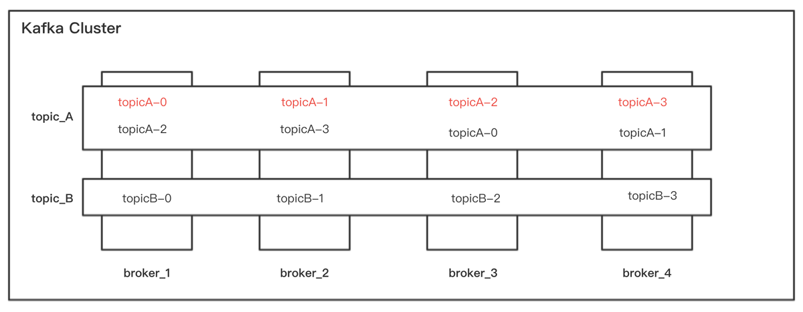
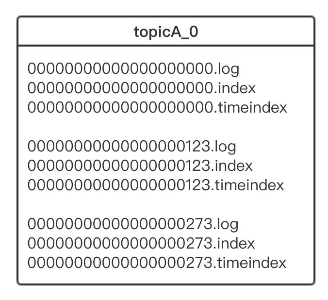
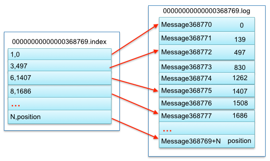
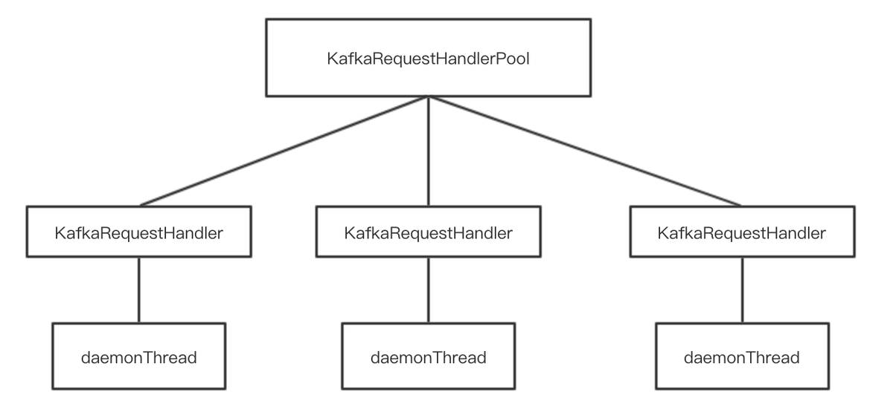
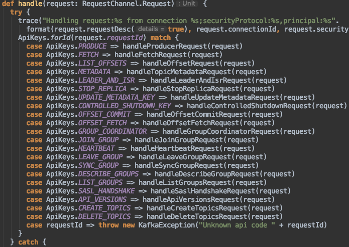
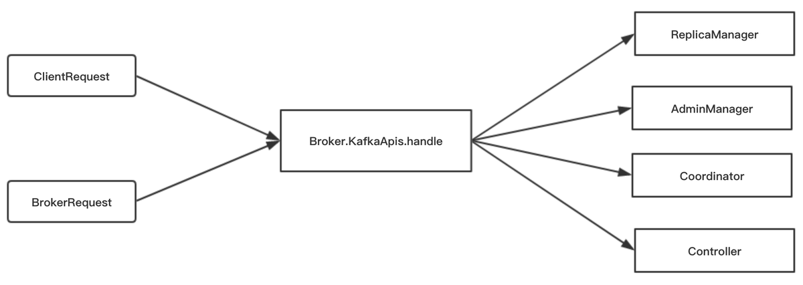
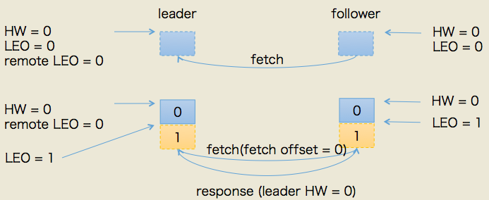
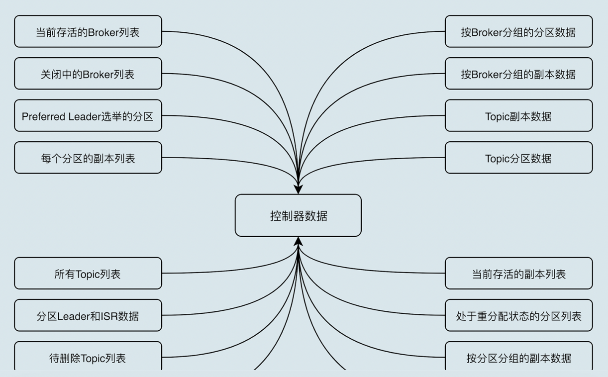

消息队列
首先了解一下使用分布式消息队列的优点，总结主要包括以下几个方面：
解耦 tags: None
在项目启动之初来预测将来项目会碰到什么需求，是极其困难的。消息系统在处理过程中间插入了一个隐含的、基于数据的接口层，两边的处理过程都要实现这一接口。这允许你独立的扩展或修改两边的处理过程，只要确保它们遵守同样的接口约束。
冗余
有些情况下，处理数据的过程会失败。除非数据被持久化，否则将造成丢失。消息队列把数据进行持久化直到它们已经被完全处理，通过这一方式规避了数据丢失风险。许多消息队列所采用的”插入-获取-删除”范式中，在把一个消息从队列中删除之前，需要你的处理系统明确的指出该消息已经被处理完毕，从而确保你的数据被安全的保存直到你使用完毕。
扩展性
因为消息队列解耦了你的处理过程，所以增大消息入队和处理的频率是很容易的，只要另外增加处理过程即可。不需要改变代码、不需要调节参数。扩展就像调大电力按钮一样简单。
灵活性 & 峰值处理能力
在访问量剧增的情况下，应用仍然需要继续发挥作用，但是这样的突发流量并不常见；如果为以能处理这类峰值访问为标准来投入资源随时待命无疑是巨大的浪费。使用消息队列能够使关键组件顶住突发的访问压力，而不会因为突发的超负荷的请求而完全崩溃。
可恢复性
系统的一部分组件失效时，不会影响到整个系统。消息队列降低了进程间的耦合度，所以即使一个处理消息的进程挂掉，加入队列中的消息仍然可以在系统恢复后被处理。
顺序保证
在大多使用场景下，数据处理的顺序都很重要。大部分消息队列本来就是排序的，并且能保证数据会按照特定的顺序来处理。［Kafka保证一个Partition内的消息的有序性；nsq不保证消息的顺序性］
缓冲
在任何重要的系统中，都会有需要不同的处理时间的元素。例如，加载一张图片比应用过滤器花费更少的时间。消息队列通过一个缓冲层来帮助任务最高效率的执行———写入队列的处理会尽可能的快速。该缓冲有助于控制和优化数据流经过系统的速度。
异步通信
很多时候，用户不想也不需要立即处理消息。消息队列提供了异步处理机制，允许用户把一个消息放入队列，但并不立即处理它。想向队列中放入多少消息就放多少，然后在需要的时候再去处理它们。
不同的Message Queue各具特色，此处以nsq和kafka这两种平台为例，做简要介绍
NSQ
NSQ是基于Go语言开发的实时的分布式消息平台，具有分布式和去中心化拓扑结构，该结构具有无单点故障、故障容错、高可用性以及能够保证消息的可靠传递的特征。
四个重要组件：
- nsqd：一个负责接收、排队、转发消息到客户端的守护进程
- nsqlookupd：管理拓扑信息并提供最终一致性的发现服务的守护进程
- nsqadmin：一套Web用户界面，可实时查看集群的统计数据和执行各种各样的管理任务
- utilities：常见基础功能、数据流处理工具，如nsq_stat、nsq_tail、nsq_to_file、nsq_to_http、nsq_to_nsq、to_nsq
特性：
- 支持无 SPOF 的分布式拓扑
- 水平扩展(没有中间件，无缝地添加更多的节点到集群)
- 低延迟消息传递 (性能)
- 结合负载均衡和多播消息路由
- 擅长面向流(高吞吐量)和任务(低吞吐量)工作负载
- 主要是内存中(除了高水位线消息透明地保存在磁盘上)
- 运行时为消费者提供发现生产者的服务(nsqlookupd)
- 传输层安全性 (TLS)
- 数据格式不可知
- 较少依赖(容易部署)和健全的、有界、默认配置
- 简单 TCP 协议，可以支持任何语言的客户端库
- HTTP 接口统计、管理行为和生产者(不需要客户端库发布)
- 集成了statsd来实现实时检测
- 健壮的集群管理界面 (nsqadmin)
担保：
- 支持消息内存队列的大小设置，默认完全持久化（值为0），消息即可持久到磁盘也可以保存在内存中
- 保证消息至少传递一次,以确保消息可以最终成功发送
- 收到的消息是无序的, 实现了松散订购
- 发现服务nsqlookupd具有最终一致性,消息最终能够找到所有Topic生产者
结构：
NSQ中的数据流模型是由stream和consumer组成。Topic是一种独特的stream，Channel是一个订阅了给定Topic的consumer逻辑分组。NSQ的数据流模型结构如下图所示：
{kind=link}
uigd95fik9
从上图可以看出，单个nsqd可以有多个Topic，每个Topic又可以有多个Channel。
Channel能够接收Topic所有消息的副本，从而实现了消息多播分发；
而Channel上的每个消息被分发给它的订阅者，从而实现负载均衡，所有这些就组成了一个可以表示各种简单和复杂拓扑结构的强大框架。
kafka
特性：
- 以时间复杂度为O(1)的方式提供消息持久化能力，即使对TB级以上数据也能保证常数时间复杂度的访问性能。
- 高吞吐率。即使在非常廉价的商用机器上也能做到单机支持每秒100K条以上消息的传输。
- 支持Kafka Server间的消息分区，及分布式消费，同时保证每个Partition内的消息顺序传输。
- 同时支持离线数据处理和实时数据处理。
- Scale out：支持在线水平扩展。
Kafka架构
- Broker：Kafka集群包含一个或多个服务器，这种服务器被称为broker
- Topic：每条发布到Kafka集群的消息都有一个类别，这个类别被称为Topic。（物理上不同Topic的消息分开存储，逻辑上一个Topic的消息虽然保存于一个或多个broker上但用户只需指定消息的Topic即可生产或消费数据而不必关心数据存于何处）
- Partition：Parition是物理上的概念，每个Topic包含一个或多个Partition.
- Producer：负责发布消息到Kafka broker
- Consumer：消息消费者，向Kafka broker读取消息的客户端。
- Consumer Group：每个Consumer属于一个特定的Consumer Group（可为每个Consumer指定group name，若不指定group name则属于默认的group）。
Kafka拓扑结构

kafka架构图
如上图所示，一个典型的Kafka集群中包含若干Producer（可以是web前端产生的Page View，或者是服务器日志，系统CPU、Memory等），若干broker（Kafka支持水平扩展，一般broker数量越多，集群吞吐率越高），若干Consumer Group，以及一个Zookeeper集群。Kafka通过Zookeeper管理集群配置，选举leader，以及在Consumer Group发生变化时进行rebalance。Producer使用push模式将消息发布到broker，Consumer使用pull模式从broker订阅并消费消息。
Topic & Partition
Topic在逻辑上可以被认为是一个queue，每条消费都必须指定它的Topic，可以简单理解为必须指明把这条消息放进哪个queue里。为了使得Kafka的吞吐率可以线性提高，物理上把Topic分成一个或多个Partition，每个Partition在物理上对应一个文件夹，该文件夹下存储这个Partition的所有消息和索引文件。
Producer消息路由
Producer发送消息到broker时，会根据Paritition机制选择将其存储到哪一个Partition。如果Partition机制设置合理，所有消息可以均匀分布到不同的Partition里，这样就实现了负载均衡。
在发送一条消息时，可以指定这条消息的key，Producer根据这个key和Partition机制来判断应该将这条消息发送到哪个Parition。
Consumer Group
（本节所有描述都是基于Consumer hight level API而非low level API）。
使用Consumer high level API时，同一Topic的一条消息只能被同一个Consumer Group内的一个Consumer消费，但多个Consumer Group可同时消费这一消息。
{kind=link}
img
这是Kafka用来实现一个Topic消息的广播（发给所有的Consumer）和单播（发给某一个Consumer）的手段。一个Topic可以对应多个Consumer Group。如果需要实现广播，只要每个Consumer有一个独立的Group就可以了。要实现单播只要所有的Consumer在同一个Group里。用Consumer Group还可以将Consumer进行自由的分组而不需要多次发送消息到不同的Topic。
NSQ vs Kafka
| NSQ | Kafka | |
|---|---|---|
| 语言 | Go | Scala |
| 消息存储 | 内存&&磁盘 | 磁盘，文件方式 |
| 顺序保证 | 无序，松散订阅 | 保证有序 |
至于在实际应用中，两种消息队列如何选择，要根据业务需求和消息队列的特性做出合理选择。以“问答”服务端为例，目前NSQ和Kafka两种消息队列都在使用中：
比如对用户行为进行统计的相关消息，我们采用nsq，主要是因为nsq消息主要保存在内存，它在处理消息上更快；并且统计用户行为的消息，只需要对消息事件记录即可，并不要求严格的顺序。
而对于提交类的事件，就需要保证严格的顺序性。比如用户提交一个答案，随后又立刻删除；由于后台和data相关业务方是根据发送的消息作相关处理，如果删除答案的消息先发送，后台和data相关业务方将会出现错误；对于此类需要严格保证消息顺序的事件，我们就采用kafka。
基础架构
KafkaServer
使用消息队列的主要好处有：
- 解耦
- 峰值处理能力、异步
- 持久化
- 顺序保证
- 扩展性
1. 架构
1.1 概念
Broker：
Kafka集群中的一台服务器。
Topic：
主题。消息的分类，是逻辑上的概念，实际以partition的形式存放在各Broker服务器上。
Partition：
- 分区。是物理上的概念，组成Topic的单位。
Replica：
副本。是具体的分区，比Partition更具体的物理概念，一个真实的目录，存放在一台Broker服务器上。在代码中又分为leader和follower。
Producer：
- 生产者。负责发送消息到Broker。
Consumer：
- 消费者。负责订阅Topic并拉取消息。
CousumerGroup：
消费者组。每条消息只被组内成员消费一次。
1.2 逻辑架构
{kind=link}
image
1.3 物理架构
1.3.1 集群物理架构
- *
 image
{kind=link}
如上图，本集群有：
- 4台broker。broker_1 到 broker_4
- 2个topic。topic_A和topic_B
- topic_A的分区数是4。topicA_0 到 topic_3
- topic_A的副本因子是2。例如topicA_0这个分区，有两个副本，分别分布在broker_1和broker_3两台机器上。
1.3.2 一个副本目录结构
上图中的topicA-0是一个partition，准确的说应该称之为一个副本，即Replica。它是broker_1服务器上的一个日志目录，其内部由多个segment文件组成。topicA-0目录结构：
- *
 image
{kind=link}
*.log文件：日志文件
*.index文件：稀疏索引文件
*.timeindex文件：时间戳索引文件。根据时间戳快速定位消息所在位置。（Kafka API offsetsForTimes方法所使用）
index文件与log文件关系:
- *
 image
{kind=link}
1.4 代码架构
1.4.1 线程池
KafkaServer在启动时，初始化KafkaRequestHandlerPool线程池
KafkaRequestHandlerPool（线程池）由KafkaRequestHandler组成
KafkaRequestHandler调用KafkaApis处理request
下图：Kafka处理request的线程池
- *
 image
{kind=link}
kafkaServer接收的请求，包括来自客户端的请求和来自其他server的请求。客户端请求例如producer发送消息请求、consumer消费消息请求。其他broker请求例如副本同步日志请求。请求类型有21个枚举值。
所有的请求最终会收敛到Broker服务器上的KafkaApis.handle方法，如下图：
- *
 image
{kind=link}
1.4.2 处理request的组件
有3个重要组件处理上图21种请求，它们分别是：
- ReplicaManager
- 把Produce日志写入磁盘
- 如果副本是follower，启动副本同步线程，发送fetch请求
- 如果副本是leader，处理来自副本的fetch请求
- Coordinator
- 管理Consumer的balance
- KafkaController
- Broker 的上线、下线
- 新建 topic 或已有 topic 的扩容，topic 删除
- 处理replica的分配、迁移、leader 选举、leader 切换
下图：处理request请求
- *
 image
{kind=link}
2. 可用性、可靠性保障
2.1 集群高可用性
在应对单点故障时，kafka仍然能够对外提供服务，主要通过以下特性保证：
- 分布式集群模式，多台服务器，分散单服务器压力。
- 一个topic拆分成多partition分区
- 一个partition建立n个副本，分为leader和follower，保持同步。leader一旦宕机从follower选举出新的leader提供读写日志服务。
2.2 消息可靠性与一致性
面对故障时是否仍然保持最终一致。
- producer.ACKS = [ -1, 0, 1] 保证日志生产的准确性。
- HW和LEO机制。保证日志同步的准确性。
2.2.1 producer.ACKs
ACKs=1
- producer发送日志，只要Leader写入成功，则返回producer成功
ACKs=0
- producer发送日志，不需要等待leader返回成功
- 传输效率最高，可靠性最差
ACKs=-1
- producer发送日志，Leader需要等待ISR中所有的Replica同步完成后，才返回给客户端成功
- 可靠性最高，效率最差。集群的瓶颈卡在了最差的那台机器
2.2.2 HW和LEO
LEO
- LogEndOffset，日志末端偏移量
- 每个Replica最后一条log所在的位置
HW
- HighWaterMark，高水位
- HW = min( ISR.LEO )
- 已经被ISR完成同步的消息的位置
- Consumer最多只能消费到HW所在的位置
- 对于内部Replica的同步消息请求，没有HW的限制
如下图，HW与LEO位置示意：
{kind=link}
image
HW与LEO更新过程：
{kind=link}
image
HW与LEO更新过程（详细）：
HW与LEO存在于每一个副本，并不仅仅存在于leader。
leader中维护了两套LEO，一套是自己的，另一套是follower的。
假设目前消息队列为空，follower启动的同步消息线程，不会获取到任何消息，也不会更新HW和LEO
- *

image
此时，Producer给leader发送了一条日志
- leader的LEO + 1
- leader尝试更新HW，HW = min(LEO)，仍然是0
- *

image
follower发送fetch请求：
- *
 image
{kind=link}
- req的offset参数是0，表示从第0个消息开始fetch
- leader更新remote LEO=0，这是因为follower request的offset是0
- leader尝试更新HW，HW = min(LEO)，仍然是0
- leader把数据和此时的leader HW返回给follower
- follower接收到respsonse，更新LEO=1，更新HW仍然是0
follower发送第二轮fetch请求:
{kind=link}
image
- req的offset参数是1，表示请求同步第一个消息
- leader更新remote LEO=1，因为follower request的offset是1
- leader尝试更新HW，HW=min(LEO)，此时更新HW=1
- leader把数据和此时的leader HW返回给follower
- follower接收到respsonse，更新HW，此时更新HW=1
至此，producer生产的消息已经保存到kafka的各个副本上了，Consumer已经可以消费到HW位置了。
一个消息从写入kafka到完成更新HW，需要follower发送两轮fetch请求。 第一轮fetch是follow告诉leader自己的leo, 以及更新offset以及leo. 第二轮fetch是告诉producer自己最新的leo用于leader更新hw.
3. 常见的选举、分配、Rebalance
Kafka集群依赖Zookeeper，Zookeeper的数据模型是一棵树，kafka的组件把回调函数注册到zk树节点下，在节点发生变更时，zk通过回调通知kafka。
3.1 Controller选举
KafkaController的选举过程比较简单，所有的broker启动时，抢占注册Zookeeper的/Controller节点，注册成功即成为Controller。伪代码如下：
1 | def elect: Boolean = { |
3.2 Consumer启动触发Rebalance
由于Broker数量通常不会很多，所以Controller选举采用抢占注册的方式不会给zookeeper带来很大压力。
但是对于Consumer而言，一个大的Topic可能对应创建了数量庞大的Consumer，Kafka老版本也确实是这么实现的，这种情况下，存在两个问题：
- 羊群效应：任何一个Consumer的增减都会触发所有Consumer的Rebalance
- 脑裂效应：每个Consumer分别单独通过Zookeeper判断哪些Consumer 宕机了，那么不同Consumer在同一时刻从Zookeeper看到的视角就可能不一样。这就会造成不正确的Reblance尝试。
新版本的Kafka对此做了优化，使用了“协调员”这一角色，作为“权威”“指挥”Consumer Rebalance
新版本，Consumer启动过程如下：
{kind=link}
image
- Consumer启动，向任意一台broker发送请求，得到响应。响应内容为“协调员的地址”。
- Consumer找到自己的Coordinator，持续发送心跳请求
- Consumer判断心跳请求的响应的ErrorCode，如果没有异常则消费数据。如果有IllegalGeneration异常，说明Coordinator正在计算rebalance，统一给Consumer分配Partition。
- Consumer给Coordinator发送JonGroup请求，得到响应，得知自己被分配了哪个Partition，连接那个partition进行消费。
3.3 Leader Replica宕机触发Rebalance
{kind=link}
image
图：broker宕机触发replica选举
Replica分布在broker上，Replica leader掉线其实就是leader所在的broker的宕机，从宕机到集群恢复稳定态过程：
- Broker启动，在zookeeper的broker/ids路径注册临时节点
- Controller启动，注册watcher函数，监听zookeeper上述路径的节点变化
- Broker因为网络、断电、机器故障等原因宕机
- zookeeper监听到broker节点掉线，触发controller注册的watcher，通过回调函数通知Controller
- Controller决定一个set_p集合，包含宕机broker上的所有partition
- 对于上述的partition，Controller从/brokers/topics/[topic]/partitions/[partition]/state读取该 Partition 当前的 ISR
- Controller从上述ISR中选出Leader。选举算法是quorum（法定人数）算法，通过数据冗余来保证数据一致性的投票算法。对于Kafka而言，选举人数就是ISR。
- Controller将新的 Leader、ISR 和新的leader_epoch及controller_epoch写入/brokers/topics/[topic]/partitions/[partition]/state
- 向set_p相关的broker发送LeaderAndIsrRequest通知受影响的broker更新信息
3.4 topic分配到broker
- 用户调用脚本创建topic，指定分区数和副本数
- Controller接收CreateTopic请求，计算broker与partition的对应关系
- Controller向Broker发送LeaderAndIsr请求，通知Broker有了新的Topic，各broker负责创建Partition
副本分配算法：
1 | * To achieve this goal for replica assignment without considering racks, we: |
知识点
kafka使用tcp, io多路复用即信号驱动io, 生产者有同步和异步2种类型
选择由producer向broker push消息并由consumer从broker pull消息。
kafka和nsq对比：
- kafka是pull，有序，吞吐高；nsq消息是无序的，吞吐低，有requeue和defer功能，不持久化，不可回溯，pull，用内存，所以速度快。
kafka数据可靠性和重复消费
- 需要消费者操作幂等，来保证重复消费无影响
- 处理后提交commit，保证消息被消费到，事务保证
- 生产者生产消息失败时，报error。
- 如果要保证有序，让消息到1个partition就行了，partition内部消费是有序的
kafka基于zk.
kafka是发布-订阅模型。
Zookeeper 主要为 Kafka 做了下面这些事情：
- Broker 注册 ：在 Zookeeper 上会有一个专门用来进行 Broker 服务器列表记录的节点。每个 Broker 在启动时，都会到 Zookeeper 上进行注册，即到/brokers/ids 下创建属于自己的节点。每个 Broker 就会将自己的 IP 地址和端口等信息记录到该节点中去
- Topic 注册 ： 在 Kafka 中，同一个Topic 的消息会被分成多个分区并将其分布在多个 Broker 上，这些分区信息及与 Broker 的对应关系也都是由 Zookeeper 在维护。比如我创建了一个名字为 my-topic 的主题并且它有两个分区，对应到 zookeeper 中会创建这些文件夹：
/brokers/topics/my-topic/Partitions/0、/brokers/topics/my-topic/Partitions/1 - 负载均衡 ：上面也说过了 Kafka 通过给特定 Topic 指定多个 Partition, 而各个 Partition 可以分布在不同的 Broker 上, 这样便能提供比较好的并发能力。 对于同一个 Topic 的不同 Partition，Kafka 会尽力将这些 Partition 分布到不同的 Broker 服务器上。当生产者产生消息后也会尽量投递到不同 Broker 的 Partition 里面。当 Consumer 消费的时候，Zookeeper 可以根据当前的 Partition 数量以及 Consumer 数量来实现动态负载均衡。
- ……
ISR:In-Sync Replicas 副本同步队列 AR:Assigned Replicas 所有副本
HW:High Watermark 高水位，取一个partition对应的ISR中最小的LEO作为HW，consumer最多只能消费到HW所在的位置上一条信息。
LEO:LogEndOffset 当前日志文件中下一条待写信息的offset
HW/LEO这两个都是指最后一条的下一条的位置而不是指最后一条的位置。
LSO:Last Stable Offset 对未完成的事务而言，LSO 的值等于事务中第一条消息的位置(firstUnstableOffset)，对已完成的事务而言，它的值同 HW 相同
LW:Low Watermark 低水位, 代表 AR 集合中最小的 logStartOffset 值
面试题
控制器Controller
控制器是如何被选出来的？
你一定很想知道，控制器是如何被选出来的呢？我们刚刚在前面说过，每台 Broker 都能充当控制器，那么，当集群启动后，Kafka 怎么确认控制器位于哪台 Broker 呢？
实际上，Broker 在启动时，会尝试去 ZooKeeper 中创建 /controller 节点。Kafka 当前选举控制器的规则是：第一个成功创建 /controller 节点的 Broker 会被指定为控制器。
控制器是做什么的？
1.主题管理（创建、删除、增加分区）
2.分区重分配
3.Preferred 领导者选举
4.集群成员管理（新增 Broker、Broker 主动关闭、Broker 宕机）
5.数据服务
保存的数据：
 image-20210523170815843
{kind=link}
consumer管理offset
kafka内部有个主题，__consumer_offset
老版本 Consumer 的位移管理是依托于 Apache ZooKeeper 的，它会自动或手动地将位移数据提交到 ZooKeeper 中保存。当 Consumer 重启后，它能自动从 ZooKeeper 中读取位移数据，从而在上次消费截止的地方继续消费。这种设计使得 Kafka Broker 不需要保存位移数据，减少了 Broker 端需要持有的状态空间，因而有利于实现高伸缩性。
但是，ZooKeeper 其实并不适用于这种高频的写操作，因此，Kafka 社区自 0.8.2.x 版本开始，就在酝酿修改这种设计，并最终在新版本 Consumer 中正式推出了全新的位移管理机制，自然也包括这个新的位移主题。
新版本 Consumer 的位移管理机制其实也很简单，就是将 Consumer 的位移数据作为一条条普通的 Kafka 消息，提交到 consumer_offsets 中。可以这么说，consumer_offsets 的主要作用是保存 Kafka 消费者的位移信息。它要求这个提交过程不仅要实现高持久性，还要支持高频的写操作。显然，Kafka 的主题设计天然就满足这两个条件，因此，使用 Kafka 主题来保存位移这件事情，实际上就是一个水到渠成的想法了。
位移主题的 Key 中应该保存 3 部分内容：gourpId, topic, partitionId